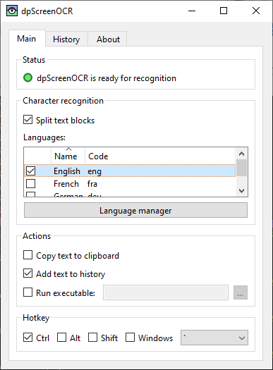

dpScreenOCR is a program to recognize text on the screen. Powered by Tesseract, it supports more than 100 languages and can split independent text blocks, such as columns. Read the manual for instructions on installing, configuring, and using the program.
Version 1.4.1 (Änderungen, Lizenz) herunterladen:
Contribute by taking part in translation or development.